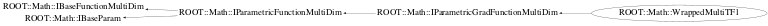

class ROOT::Math::WrappedMultiTF1: public ROOT::Math::IParametricGradFunctionMultiDim
Function Members (Methods)
public:
| virtual | ~WrappedMultiTF1() |
| virtual ROOT::Math::IMultiGenFunction* | Clone() const |
| static double | GetDerivPrecision() |
| const TF1* | GetFunction() const |
| virtual unsigned int | NDim() const |
| virtual unsigned int | NPar() const |
| double | ROOT::Math::IParametricFunctionMultiDim::operator()(const double* x, const double* p) const |
| ROOT::Math::WrappedMultiTF1& | operator=(const ROOT::Math::WrappedMultiTF1& rhs) |
| double | ROOT::Math::IParametricGradFunctionMultiDim::ParameterDerivative(const double* x, unsigned int ipar = 0) const |
| double | ROOT::Math::IParametricGradFunctionMultiDim::ParameterDerivative(const double* x, const double* p, unsigned int ipar = 0) const |
| virtual void | ParameterGradient(const double* x, const double* par, double* grad) const |
| virtual string | ParameterName(unsigned int i) const |
| virtual const double* | Parameters() const |
| void | SetAndCopyFunction(const TF1* f = 0) |
| static void | SetDerivPrecision(double eps) |
| virtual void | SetParameters(const double* p) |
| ROOT::Math::WrappedMultiTF1 | WrappedMultiTF1(const ROOT::Math::WrappedMultiTF1& rhs) |
| ROOT::Math::WrappedMultiTF1 | WrappedMultiTF1(TF1& f, unsigned int dim = 0) |
private:
| virtual double | DoEvalPar(const double* x, const double* p) const |
| virtual double | DoParameterDerivative(const double* x, const double* p, unsigned int ipar) const |
Data Members
private:
| unsigned int | fDim | cached value of dimension |
| TF1* | fFunc | pointer to ROOT function |
| bool | fLinear | flag for linear functions |
| bool | fOwnFunc | flag to indicate we own the TF1 function pointer |
| vector<double> | fParams | cached vector with parameter values |
| bool | fPolynomial | flag for polynomial functions |
| static double | fgEps | epsilon used in derivative calculation h ~ eps |p| |
Class Charts



Function documentation
WrappedMultiTF1(TF1& f, unsigned int dim = 0)
IMultiGenFunction * Clone() const
@name interface inherited from IFunction
Clone the wrapper but not the original function
const double * Parameters() const
@name interface inherited from IParamFunction get the parameter values (return values cached inside, those inside TF1 might be different)
void SetParameters(const double* p)
set parameter values (only the cached one in this class,leave unchanges those of TF1)
void ParameterGradient(const double* x, const double* par, double* grad) const
evaluate the derivative of the function with respect to the parameters
void SetDerivPrecision(double eps)
precision value used for calculating the derivative step-size h = eps * |x|. The default is 0.001, give a smaller in case function changes rapidly
void SetAndCopyFunction(const TF1* f = 0)
method to set a new function pointer and copy it inside. By calling this method the clas manages now the passed TF1 pointer
double DoEvalPar(const double* x, const double* p) const
evaluate function passing coordinates x and vector of parameters
double DoParameterDerivative(const double* x, const double* p, unsigned int ipar) const
evaluate the partial derivative with respect to the parameter